必应地图扩展
因为有些原因，App Inventer2中的（谷歌）地图在国内不好用。本扩展可以让你在app inventor应用中使用微软必应地图。
更新记录
v1 - 20230227
- 第一次发布
所有属性

| 参数 | 类型 | 意义 | |
|---|---|---|---|
| Center | jsonArray | 中心坐标 [纬度,经度] | |
| EnablePanning | 逻辑 | 允许平移 | |
| EnableZooming | 逻辑 | 允许缩放 | |
| Key | 文本 | 从必应地图申请的key。到这里申请 | |
| MapType | 文本 | 地图类型 | |
| MaxZoom | 数字 | 最大允许缩放等级 | 1-19 |
| MinZoom | 数字 | 最小允许缩放等级 | 1-19 |
| ShowLocateMeButton | 逻辑 | 是否显示‘我的位置’按钮 | |
| ShowMapTypeSelector | 逻辑 | 是否显示地图类型选择器 | |
| ShowScalebar | 逻辑 | 是否显示比例尺 | |
| ShowZoomButtons | 逻辑 | 是否显示缩放按钮 | |
| Zoom | 数字 | 初始缩放等级 | 1-19 |
相关代码块
地图初始化
将地图载入到垂直（或者水平）布局中。初始化之前，在设计窗口设置好所有初始参数。
导入后效果如图：
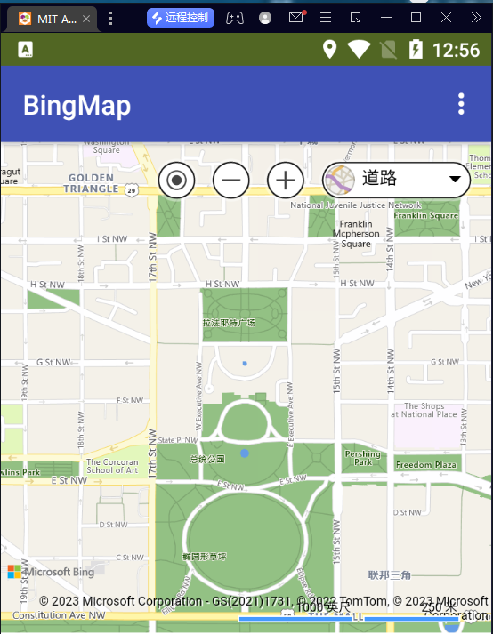
在地图被点击时，会触发MapClicked事件。
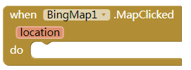
| 参数 | 类型 | 意义 |
|---|---|---|
| location | 列表 | 点击位置坐标 |
平移地图和缩放地图
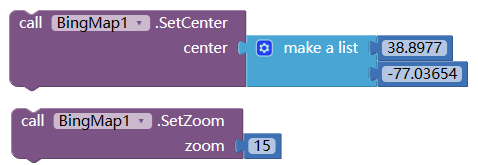
| 参数 | 类型 | 意义 |
|---|---|---|
| center | 列表 | 地图中心位置坐标 |
| zoom | 数字 （1-19） | 缩放级别 |
在地图被平移或者缩放时，会触发MapViewChanged事件
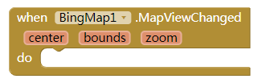
| 参数 | 类型 | 意义 |
|---|---|---|
| location | 列表 | 点击位置坐标 |
| center | 列表 | 视图中心坐标 |
| bounds | 列表 | 视图左上坐标和右下坐标 |
| zoom | 数字 | 当前缩放级别 |
图钉按钮
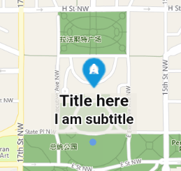
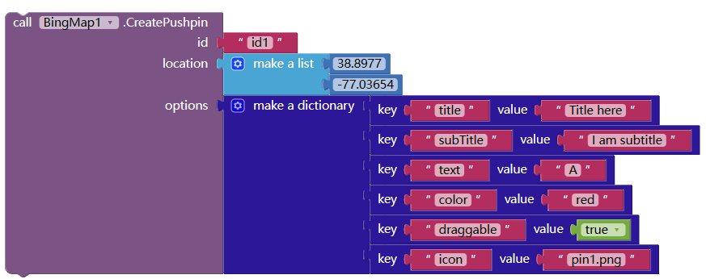
| 参数 | 类型 | 意义 |
|---|---|---|
| id | 文本 | 每个图钉的id |
| location | 列表 | 图钉位置 |
| options | 字典 | 图钉属性设置 |
| –title | 文本 | 主文本 |
| –subTitle | 文本 | 副文本 |
| –text | 文本 | 显示在图钉上 |
| –color | 文本 | 图钉颜色 |
| –draggable | 逻辑 | 是否可以拖动 |
| –icon | 文本 | 图标文件，可以是base64 |
options都是可选的，甚至可以是空字典。
图钉按钮可能引发被点击事件和被拖动事件
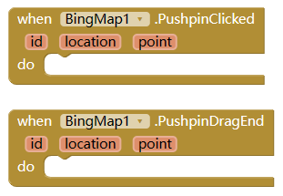
| 参数 | 类型 | 意义 |
|---|---|---|
| id | 文本 | 图钉id |
| location | 列表 | 图钉坐标 [纬度,经度] |
| point | 列表 | 图钉坐标 [屏幕x，屏幕Y] |
线段
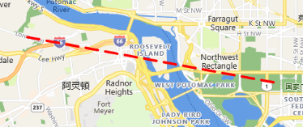
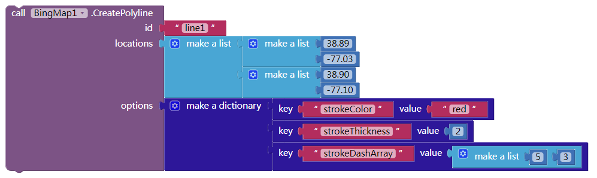
| id | 文本 | 线段的id |
| locations | 列表 | 线段顶点坐标的列表，长度最小为2 |
| options | 字典 | 线段属性设置 |
| –strokeColor | 文本 | 线段颜色 |
| –strokeThickness | 数字 | 线宽 |
| –strokeDashArray | 列表 | 虚实线画法 [实线，虚线，实线，虚线,…] |
线段被点击会引发点击事件
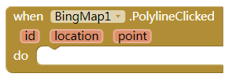
参数意义同图钉按钮。
多边形
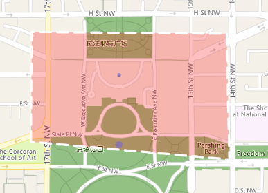
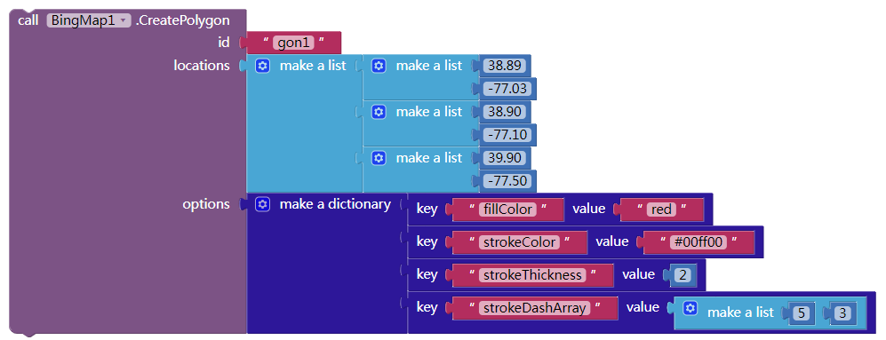
| id | 文本 | 多边形的id |
| locations | 列表 | 多边形顶点坐标的列表，长度最小为3 |
| options | 字典 | 多边形属性设置 |
| –fillColor | 文本 | 填充色 |
| –strokeColor | 文本 | 边线颜色 |
| –strokeThickness | 数字 | 边线线宽 |
| –strokeDashArray | 列表 | 虚实线画法 [实线，虚线，实线，虚线,…] |
多边形点击会引发点击事件：
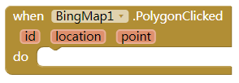
参数意义同线段
规则多边形
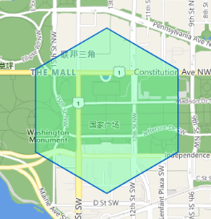
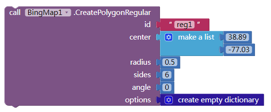
| id | 文本 | 多边形的id |
| center | 列表 | 外切圆的中心坐标 |
| radius | 数字 | 外切圆的半径，单位km |
| sides | 整数 | 边数 |
| angle | 整数 | 旋转度数 |
| options | 字典 | 同多边形 |
点击会引发多边形点击事件（同上）
删除形状
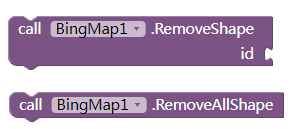
根据id删除图钉、线段、多边形，或者全部删除。
信息窗
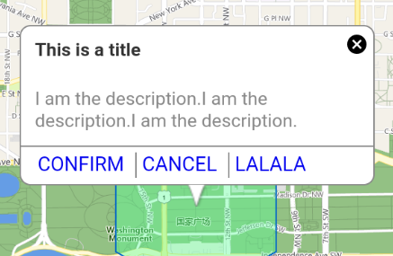
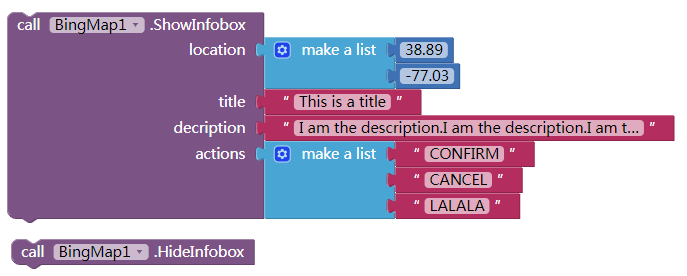
ShowInfobox: 显示信息窗口
HideInfobox: 隐藏信息窗口
| 参数 | 类型 | 意义 |
|---|---|---|
| location | 列表 | 坐标 |
| title | 文本 | 信息窗标题 |
| description | 文本 | 信息窗主要文本 （可以是html文本） |
| actions | 列表 | 按钮文本列表。可以是空列表 |
点击按钮文本会引发点击事件：
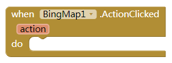
路线规划
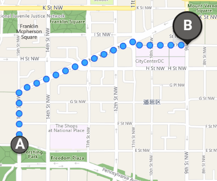
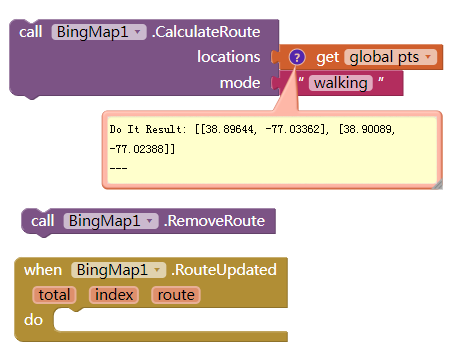
CalculateRoute: 计算路线。计算成功会在地图上绘制路线，并引发RouteUpdated事件。
RemoveRoute：从地图上清除路线
| locations | 列表 | 坐标列表，长度至少为2，中间的坐标是途经点位置 |
| mode | 文本 | 行进方式：driving（开车）, transit（公共交通）,truck（货车）,walking（步行） |
| total | 数字 | 查找到的路线数量 |
| index | 数字 | 当前选中路线序号 |
| route | json型文本 | 线路详情。原始数据，里面包含线路上的点坐标，行进文本指示等。需要用字典自己解析。 |
位置和坐标转换
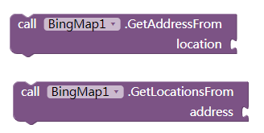
GetAddressFrom: 坐标 [纬度，经度] 转为地址。
GetLocationsFrom: 地址转为坐标。（可能会返回多个坐标）
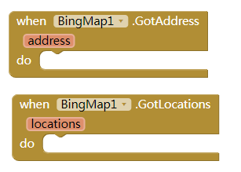
计算距离
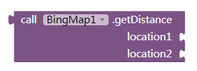
计算两点之间的距离。
常见问题
-
如何知道地图加载完成？
可以使用MapViewChanged事件。他第一次被调用时，作为加载完成事件。
-
如何画圆？
使用CreatePolygonRegular方法，适当增加边数，可以得到一个近似圆。